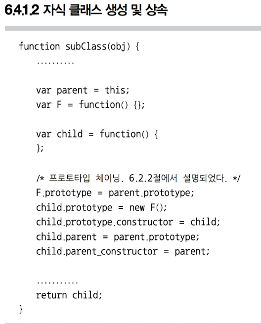
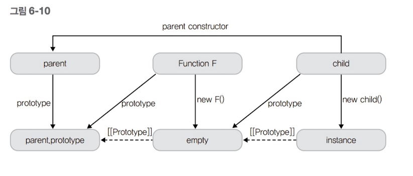
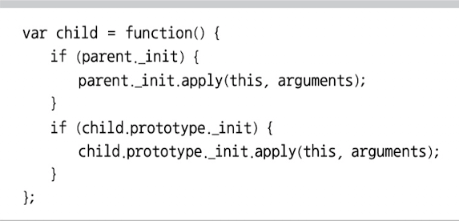
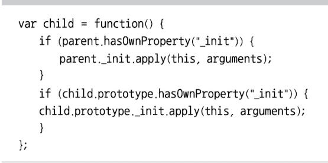
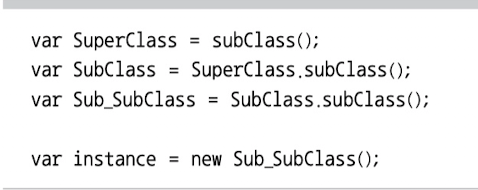
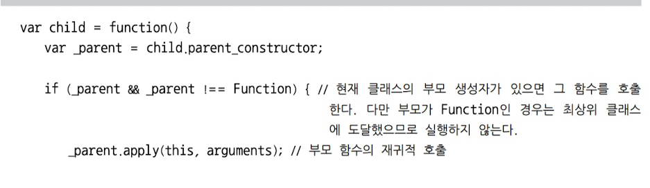
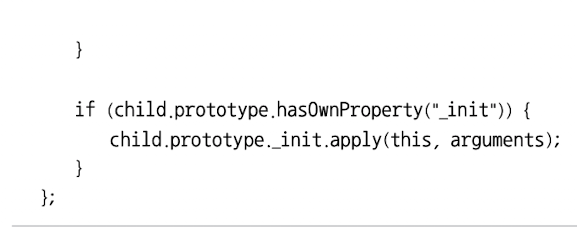
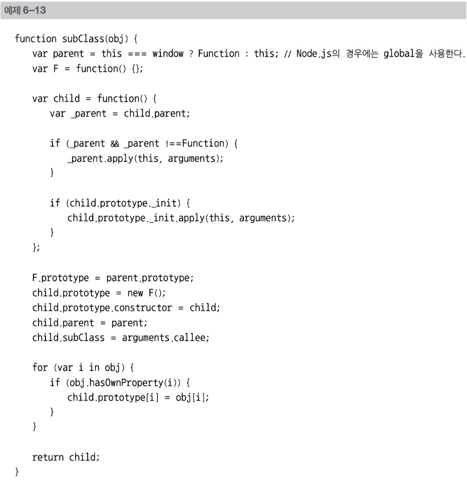
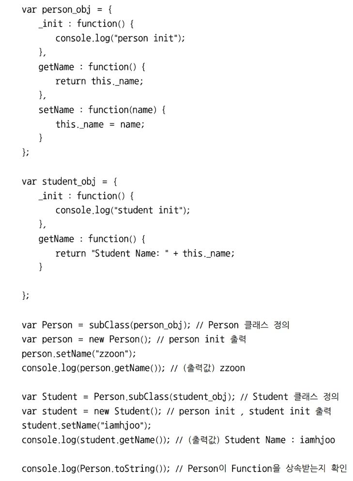

클래스의 기능을 가진 subClass 함수
6.2.1 프로토타입을 이용한 상속과 6.2.2 클래스 기반의 상속에서 소개한 내용을 바탕으로 기존 클래스와 같은 기능을 하는 자바스크립트 함수를 만들어보자. 이 함수에서는 앞서 소개한 다음 세 가지를 활용해서 구현한다. 함수의 이름은 subClass로 하겠다. * 함수의 프로토타입 체인 * extend 함수 * 인스턴스를 생성할 때 생성자 호출(여기서는 생성자를 _init 함수로 정한다.) subClass 함수 구조 subClass는 상속받을 클래스에 넣을 변수 및 메서드가 담긴 객체를 인자로 받아 부모 함수를 상속받는 자식 클래스를 만든다. 여기서 부모 함수는 subClass() 함수를 호출할 때 this 객체를 의미한다. 예를 들면 다음과 같다. ========================================= var SuperClass = subClass(obj); var SubClass = SuperClass.subClass(obj); ========================================= 이처럼 SuperClass를 상속받는 subClass를 만들고자 할 때, SuperClass.subClass()의 형식으로 호출하게 구현한다. 참고로 최상위 클래스인 SuperClass는 자바스크립트의 Function을 상속 받게 한다. 함수 subClass의 구조는 다음과 같이 구성된다. ========================================= function subClass(obj){ /* (1) 자식 클래스 (함수 객체) 생성 */ /* (2) 생성자 호출 */ /* (3) 프로토타입 체인을 활용한 상속 구현 */ /* (4) obj를 통해 들어온 변수 및 메서드를 자식 클래스에 추가 */ /* (5) 자식 함수 객체 반환 */ } =========================================

자식 클래스는 child라는 이름의 함수 객체를 생성함으로써 만들어졌다. 부모 클래스를 가리키는 parent는 this를 그대로 참조한다. 그리고 프로토타입 체인 구성은 6.2.2 클래스 기반의 상속에서 설명된 방식을 그대로 사용하였으므로 여기서는 설명을 생략하고 그림으로 대체하겠다.

그림 6-9와 상당히 유사하다. 다른 점이 하나 있는데 child.parent_constructor에 부모의 생성자를 참조시켰다는 점이다. 그 이유는 6.4.1.4 생성자 호출에서 설명한다. 이렇게 프로토타입 체인을 구성하여 부모를 상속받는 새로운 자식 클래스가 만들어지고 반환된다. 6.4.1.3 자식 클래스 확장 이제 사용자가 인자로 넣은 객체를 자식 클래스에 넣어 자식 클래스를 확장할 차례다. ============================================ for (var i in obj){ if (obj.hasOwnProperty(i)){ child.prototype[i] = obj[i]; } } ============================================ 앞 코드에서 보는 바와 같이 6.2.1 프로토타입을 이용한 상속에서 살펴본 extend() 함수의 역할을 하는 코드를 넣었다. 여기서는 간단히 얕은 복사로 객체의 프로퍼티를 복사하는 방식을 택했다. NOTE _ hasOwnProperty 메서드 Object.prototype 프로퍼티에 정의되어 있는 메서드로서, 인자로 넘기는 이름에 해당하는 프로퍼티가 객체 내에 있는지를 판단한다. 여기서 프로퍼티를 찾을 때, 다음 예제와 같이 프로토타입 체인을 타고 올라가지 않고 해당 객체 내에서만 찾는다는 것에 유의해야 한다. o = new Object(); o.prop = 'exists'; o.hasOwnProperty('prop'); //returns true o.hasOwnProperty('toString'); //returns false o.hasOwnProperty('hasOwnProperty'); //returns false 6.4.1.4 생성자 호출 클래스의 인스턴스가 생성될 때, 클래스 내에 정의된 생성자가 호출돼야 한다. 물론 부모 클래스의 생성자 역시 호출되어야 한다. 이를 자식 클래스 안에 구현하자. 이 역시 6.2.2 클래스 기반의 상속에서 언급되었으므로 설명은 코드로 대체하겠다.

이 코드는 겉보기엔 큰 문제가 없어 보이지만 문제를 안고 있다. parent._init이나 child.prototype._init을 찾을 때, _init 프로퍼티가 없으면 프로토타입 체인으로 상위 클래스의 _init 함수를 찾아서 호출할 수 있다. 따라서 다음과 같이 앞에서 소개된 hasOwnProperty 함수를 활용하는 것이 좋다.

이제 생성자 호출이 완성된 듯 보인다. 하지만 안타깝게도 한 가지를 더 고려해야 한다. 앞 코드는 단순히 부모와 자식이 한 쌍을 이루었을 때만 제대로 동작한다. 자식을 또 다른 함수가 다시 상속 받았을 때는 어떻게 될 것인가? 다음 예를 보자.

이 코드에서 instance를 생성할 때, 그 상위 클래스의 상위 클래스인 SuperClass의 생성자가 호출이 되지 않는다. 따라서 부모 클래스의 생성자를 호출하는 코드는 재귀적으로 구현할 필요가 있다. 이미 child.parent_constructor에 부모의 생성자 함수를 참조시켜 놓았으므로 구현에 문제가 없다.


parent를 단순히 this.prototype으로 지정해서는 안 된다. 우리는 처음에 최상위 클래스를 Function을 상속받는 것으로 정했는데, 현재 코드에는 이를 처리하는 코드가 없다. 따라서, 다음 코드를 =========================================== parent = this; =========================================== 다음과 같이 수정하자. =========================================== if (this === window){ var parent = Function; } else { var parent = this; } =========================================== 이를 조금 더 깔끔하게 다음 코드로 바꿀 수 있다. =========================================== var parent = this === window ? Function : this; //Node.js의 경우에는 global을 사용한다. =========================================== 또 하나 빠진 부분이 있다. subClass 안에서 생성하는 자식 클래스의 역할을 하는 함수는 subClass 함수가 있어야 한다. 다음 코드를 추가하자. =========================================== child.subClass = arguments.callee; =========================================== arguments.callee는 현재 호출된 함수를 의미하는데, 현재 호출된 함수가 subClass이므로 child.subClass는 subClass 함수를 참조한다. 자, 이제 제법 그럴듯한 함수가 만들어졌다. 만들어진 subClass 함수의 전체 코드는 다음과 같다.

이제 subClass 함수로 상속 예제를 만들어보자.
